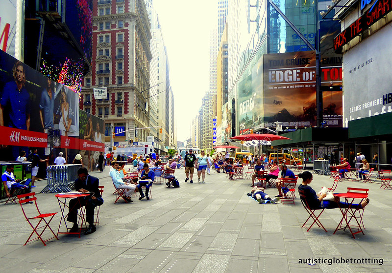

It features my favorite things in New York City

New York City is in the United States of America.
It has different boroughs throughout the state.
New York City has different bridges.
It has different harbors and islands.
New York City is home to more than 3.2 million residents born outside the United States,the largest foreign-born population of any city in the world.
As of 2019, the New York metropolitan area is estimated to produce a gross metropolitan product (GMP) of US$1.9 trillion.
If greater New York City were a sovereign state, it would have the 12th highest GDP in the world.New York is home to the highest number of billionaires of any city in the world.
New York City comprises 5 boroughs sitting where the Hudson River meets the Atlantic Ocean.
At its core is Manhattan, a densely populated borough that’s among the world’s major commercial, financial and cultural centers.
Its iconic sites include skyscrapers such as the Empire State Building and sprawling Central Park.
Broadway theater is staged in neon-lit Times Square.
New York City - there's no place quite like it.
Even if you think you know New York City well-the world-class museums, amazing food and unforgettable views-there's always something new and exciting to discover.
Thrilling shows, fabulous shopping, and first-rate sports draw visitors from around the globe to the world's entertainment capital.
With awesome architecture and parks, New York was rated No. 1 of America's most beautiful cities by Budget Travel.
Take in its grandeur from observation decks at icons like the Empire State Building and Top of the Rock, or on a stroll across the Brooklyn Bridge or Brooklyn Heights Promenade.
The new One World Trade Center, the tallest building in the Western Hemisphere, was just named world's best new attraction by Telegraph Travel UK.
A 60-second elevator ride whisks you to the Observatory at the top.
Surrounded by panoramic views, it feels like you can see forever!
From Broadway to the Bronx Zoo, the five boroughs have something for everyone.
The Barclays Center in Brooklyn, home of the Nets NBA team and NY Islanders hockey, presents top stars like Selina Gomez and Demi Lovato & Nick Jonas.
Nearby tour the famous Brooklyn Brewery.